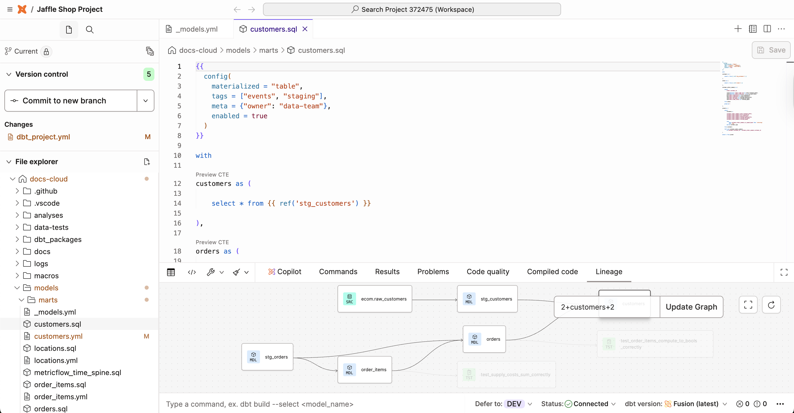
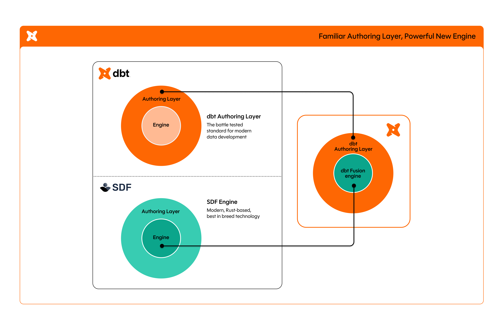

“dbt” is one project but three things you can install and run. They all execute the same kind of dbt project — same SQL, same YAML, same DAG — but they differ in what runs the project, where it runs, and what surrounds it.
The original. A Python package (dbt-core) plus a warehouse adapter (dbt-snowflake, dbt-bigquery, dbt-duckdb, …). You install it with pip and run it from your terminal:
pip install dbt-core dbt-duckdb
dbt run
dbt test
This is what you’ll use throughout this course. It’s free, it works offline (against DuckDB), and every dbt-Cloud or dbt-Fusion concept is built on top of it.
dbt Cloud (run by dbt Labs, the company behind dbt) wraps dbt Core with a hosted UI, scheduler, and IDE.

This is the dbt Cloud browser IDE: file tree, SQL editor, command bar, and live lineage all in one tab — no local setup required.
What you get on top of Core:
dbt Cloud has a free Developer tier and paid Team / Enterprise tiers.
Announced in 2025, dbt Fusion is a from-scratch reimplementation of dbt’s core engine in Rust. The Python dbt-core parser was the bottleneck for large projects (parsing 5,000 models could take minutes). Fusion parses the same project in seconds.

What Fusion adds beyond raw speed:
Fusion runs the same project structure as Core. You can install it alongside Core and switch between them.
| dbt Core | dbt Cloud | dbt Fusion | |
|---|---|---|---|
| Language | Python | (wraps Core / Fusion) | Rust |
| Cost | Free | Free tier + paid | Free (in beta as of 2025) |
| Where it runs | Your laptop / your CI / your server | dbt Labs’ cloud | Your laptop / your CI |
| Scheduler | BYO (cron, Airflow, GitHub Actions) | Built in | BYO |
| IDE | BYO (VS Code, Cursor, …) | Browser IDE | VS Code extension |
| Speed on big projects | Slow parse phase | Same as underlying engine | ~30x faster parse |
| If you’re … | Pick |
|---|---|
| Just learning, working on a hobby project, or building a side project | Core (this course) |
| A small team that wants a managed scheduler, IDE, and docs without setting them up | Cloud |
| A big project where parsing latency hurts your inner loop, or you want VS Code-grade autocomplete | Fusion (still in beta as of 2025; runs alongside Core) |
| An enterprise that needs SSO, RBAC, audit logs, SLAs | Cloud Enterprise |
Everything in dbt Cloud and dbt Fusion is built on top of dbt Core’s project structure. Learn Core well, and you’ll be productive in any of the three on day one. We’ll come back to Fusion specifically in Stage 7 (the tooling-landscape lesson) once you have a real project to point it at.
That’s the end of Stage 0. Press n to take the stage quiz, then on to Stage 1 where we install dbt and run it for real.